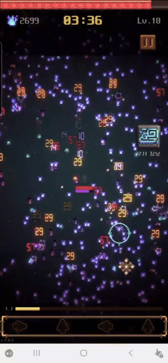
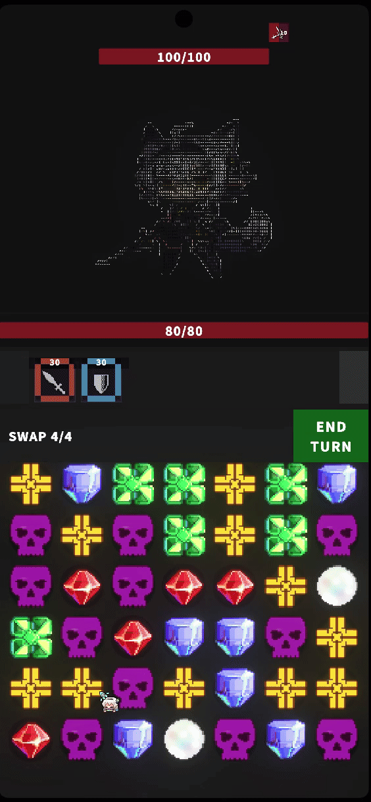
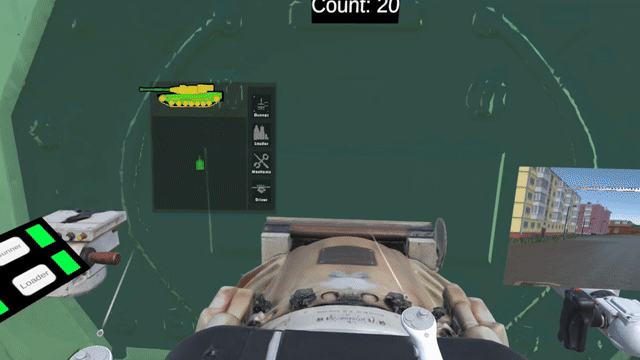
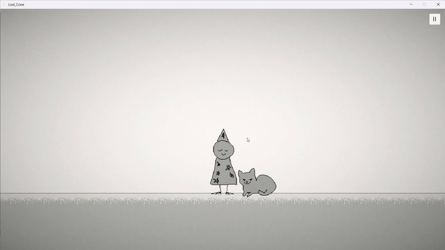
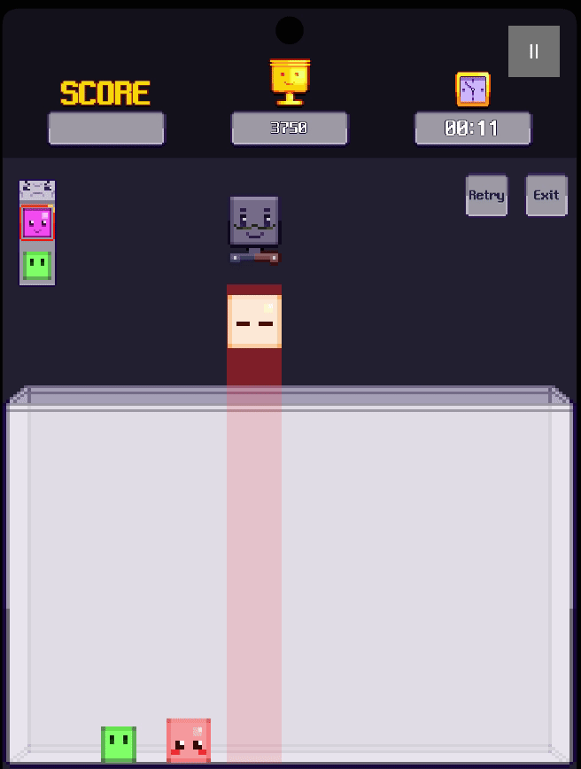
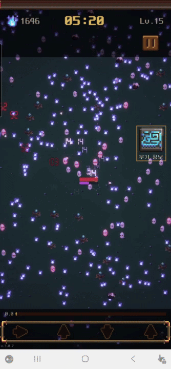

아이디어를 넘어 완성까지,
개발자 정우태입니다.
C# · Unity 기반 게임 클라이언트 개발자입니다. 출시 · 구조 설계 · 트러블슈팅을 직접 경험하며, 다른 장르의 문법을 녹여 차별점을 만드는 방식으로 작업합니다.






장르 루프를 끝까지 완성해 Google Play 출시, 이후 출시본을 기준본으로 두고 DOTS로 대량 적 처리를 재설계했습니다.
한국 무속 테마 모바일 survival-like. 구조적 병목을 분리해 같은 장면에서 성능을 재검증하는 방향으로 이어갔습니다.
문제를 측정하고 구조를 바꿔 차이를 수치로 남겼습니다. 수치는 "구조 변경이 왜 필요했는가"의 근거입니다.
목적은 AI로 코드를 많이 만드는 게 아니라, AI가 작업해도 구조가 깨지지 않게 경계·금지 규칙·테스트를 먼저 세우는 것이었습니다.
모바일 portrait 매치3 로그라이크 — 1인 개발, AI 협업 구조 실험.
기능 테스트가 통과해도 실제 모바일 화면에서 읽히지 않을 수 있습니다. 그래서 문서·테스트 근거·화면 QA를 다른 레이어로 분리했습니다.
본인 담당은 포수 조준·탄도 계산·적 AI·전차 상태 연결, 팀원 시스템과는 이벤트·인터페이스로 경계를 나눴습니다.
"협동의 불편함이 재미가 된다"는 컨셉의 VR 전차 시뮬레이션 · 2인 팀.
유저 설문·플레이테스트를 근거로, 복잡한 퍼즐형 메트로배니아에서 세계관·탐험 중심으로 방향을 바꿨습니다.
팬층 대상 플랫포머 · 개발일지 50회의 공개 개발.
같은 코드·같은 커밋에서도 키보드 입력이 중단되는 문제였습니다. 코드 변경만으로는 원인을 잡을 수 없었고, 실행 환경의 Input System 상태를 직접 확인하며 원인을 분리했습니다.
원형 병합이 아니라 정사각 큐브의 회전·낙하·밀치기로 플레이 감각을 바꾼 병합 퍼즐입니다.
1주 내 솔로 완성 후 itch.io에 WebGL 배포, 이후 모바일 조작·수익화 scaffold 보강.
Dong_Mae는 팀 프로젝트에서 레벨 기믹과 연출 구현 폭을, MyTokenMate는 개발 중 반복되던 AI 사용량 확인 문제를 local-only 도구로 푼 사례입니다.
프로젝트마다 형태는 달라도 반복되는 기준은 같습니다. 먼저 목적과 경계를 정하고, 구현 후에는 테스트·영상·실제 화면·운영 문서로 결과를 다시 확인합니다.
링크를 누르면 브라우저에서 영상·플레이·기록으로 이동합니다.